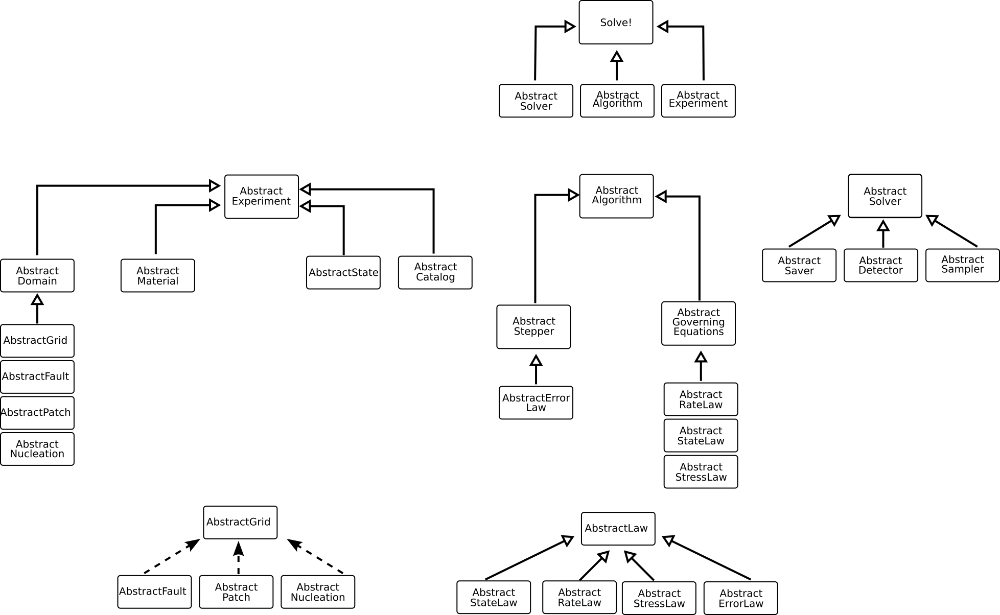

Code structure and design
The package is designed to follow a composition based approach so that it is easier to customize the different solvers and problems but have a unified interface to solve/save/plot the results. The idea is to divide the different parts used in a simulation in independent components that can be swapped depending on what is necessary. In Julia these "components" are AbstractTypes, i.e. a general type that then can be used to define sub types or specific structs (concrete types). This is a simple UML class diagram that shows the general structure of the package and how the different components can be combined together.

In general:
- Experiments are defined as a combination of Domains and Material. Experiments also depend on AbstractState and AbstractCatalog (think of it as "i am measuring/recording the quantities during my experiment").
- Algorithms are defined as a combination of Steppers and Governing equations
- Solvers are defined as a combination of one or more AbstractSavers (what to save during a simulation), AbstractDetectors (is an event happening?) and AbstractSamplers (how does this quantity vary on this point/section?).
Solving is then just a loop that runs combinations of these three main components.
function solve(experiment::AbstractExperiment, algorithm::AbstractAlgorithm, solver::AbstractTimeSolver)
state = experiment.state
stepper = algorithm.stepper
dx = state.dx
V = state.V
theta = state.theta
tf = solver.tf
detector = solver.detector
savers = solver.savers
samplers = solver.samplers
while stepper.time <= tf
dx, V, theta = algorithm(dx, V, theta) #Find the next step using the algorithm
sample(samplers, stepper, state, detector.eventN) # Sample
if typeof(detector) != EmptyDetector
detect(detector, savers) # Detect (when an event is detected we save)
else
simsave(savers, stepper.step) # Save every nth step (if detectors are not used)
end
end
endBy using this approach then it is easy to expand. For example, if we want to add a fully elasto-dynamic solver for computing the stress then we just need to write the new component as a AbstractStressLaw and use that when defining the AbstractAlgorithm object.
Available components
Algorithms
HighSeas.AbstractAlgorithm — Type
Abstract type used for all algorithms used to solve an experiment
HighSeas.AbstractNewton — Type
Abstract subtype used for Newton algorithm
Experiments
HighSeas.AbstractExperiment — Type
Abstract type used to define an experiment
HighSeas.AbstractBenchExperiment — Type
Abstract subtype used to define an benchmark experiment
Geometries
HighSeas.AbstractFault — Type
Abstract type used to define a fault element in the simulation
HighSeas.AbstractPatch — Type
Abstract type used to define a rate weakening element in the simulation
HighSeas.AbstractNucleation — Type
Abstract type used to define a nucleation patch element in the simulation
HighSeas.AbstractDomain — Type
Abstract type used to group all elements of the simulated geometry (i.e. fault, rate weakening patch etcetc).
Notes
For now only one fault, patch and nucleation can be defined per domain. Also only one domain per experiment can be used.
Grids
HighSeas.AbstractGrid — Type
Abstract type used to define the underlying grids of the simulations
HighSeas.AbstractPowerGrid — Type
Abstract subtypetype used to define a grid with power 2 elements and square cells
Laws
HighSeas.AbstractLaw — Type
Abstract type used to define laws that govern the simulation
HighSeas.AbstractRateLaw — Type
Abstract subtype used to define Rate laws (i.e. linearized or explicit)
HighSeas.AbstractStateLaw — Type
Abstract subtype used to define State laws (i.e. aging or slip law)
HighSeas.AbstractHybridRateLaw — Type
Abstract subtype used to define a hybrid law (use different laws depending on a threshold)
HighSeas.AbstractStressLaw — Type
Abstract subtype used to define Stress laws
HighSeas.AbstractErrorLaw — Type
Abstract subtype used to define Error laws used in AbstractAdaptiveSteppers
Materials
HighSeas.AbstractMaterial — Type
Abstract type used to define a material used in the simulation
Solvers
HighSeas.AbstractSolver — Type
Abstract type used to define a solver, i.e. how the AstractAlgorithm is managed
HighSeas.AbstractStepSolver — Type
Abstract subtype used to define solvers that run in a predefined number of steps
HighSeas.AbstractTimeSolver — Type
Abstract subtype used to define solvers that run in a predefined time
@docs HighSeas.AbstractStepper
@docs HighSeas.AbstractAdaptiveStepper